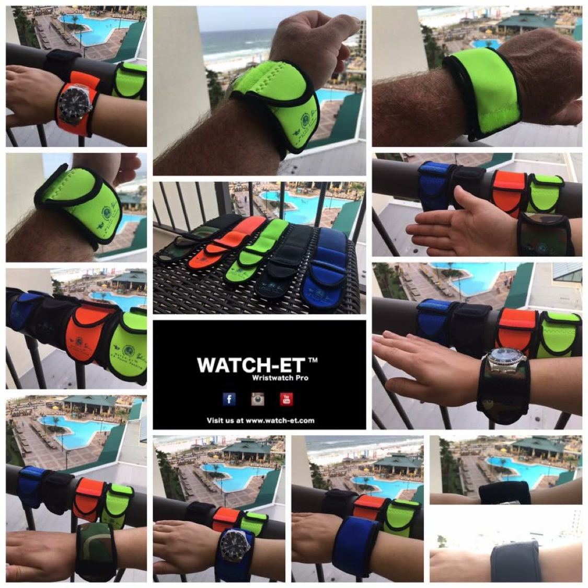

From the blog
Why a WATCH-ET Sleeve Makes a Great Gift
October 13, 2026

Shopping for someone who loves watches is hard. They already own the watch they want, and the next one on their list costs more than your budget. A WATCH-ET sleeve solves that problem. It fits the watch they already love, it gets used every day, and it costs $23 or $25 depending on size.
1. It fits the watch they already own
No guessing about brands or styles. The Medium fits watches up to 48mm and the Large fits up to 53mm, which covers just about every wrist watch out there. If you are not sure which to get, the Large is the safe pick.
2. It is a gift that gets used
Most gifts sit on a shelf. A watch sleeve goes on the wrist. It guards the watch during work, travel, workouts, and yard chores, and the flap folds over the face when the day gets rough. Useful beats decorative every time.
3. Pick a color that fits them
Five colors, one for every personality. Key Lime for the one who likes to stand out. Sunburst Orange for the fan of bright gear. Nautical Blue for the boater or the beach lover. Camo for the outdoors type. Night OP's Black for the one who keeps it low key.
4. Easy to give
It is small enough to tuck into a stocking or a gift bag, and it needs no batteries, no setup, and no instructions. Just slide it over the watch and go.
5. For the person who has everything
Every watch lover has that one watch they baby. Give them a reason to wear it more. A sleeve takes the worry out of daily wear, which means the good watch leaves the box instead of sitting in it.
Fair price, useful every day, and it fits the watch they already love. That is a gift that lands.
Tired of babying your watch?
Medium $23 fits watches up to 48mm. Large $25 fits up to 53mm. Five colors.
Order Yours More Tips